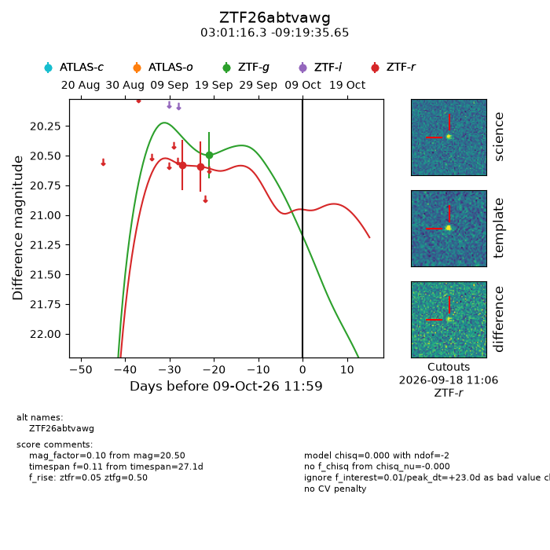
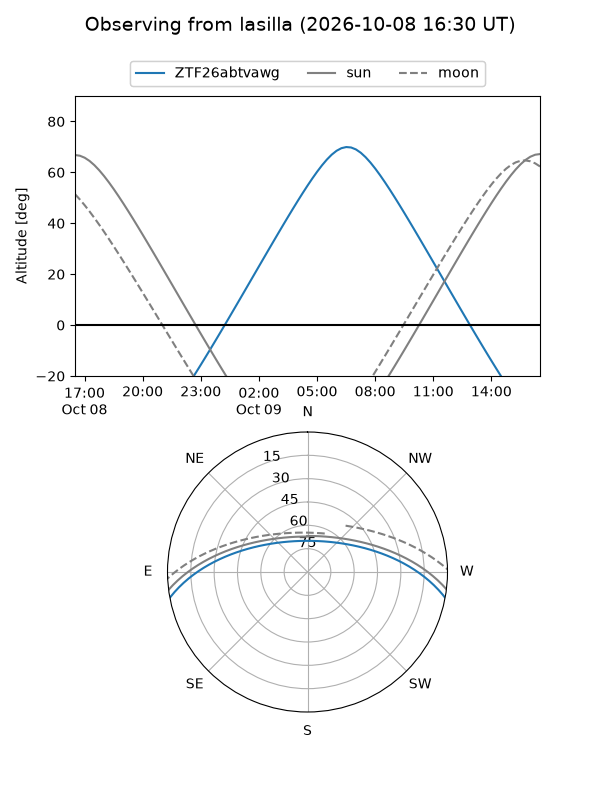
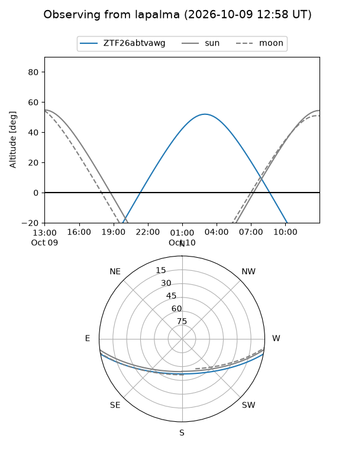
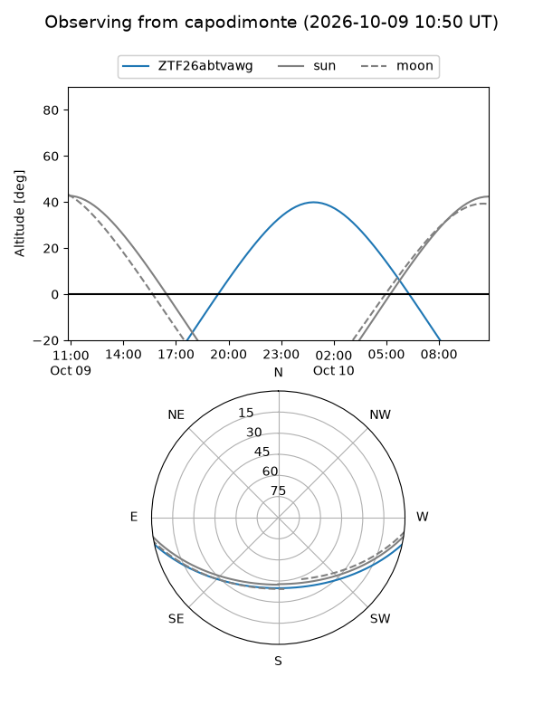
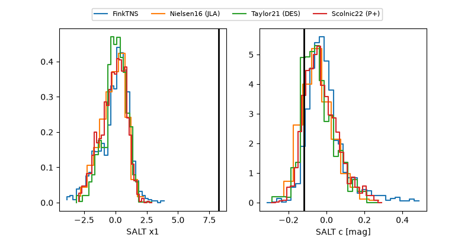

ZTF26abtvawg
Target ZTF26abtvawg at 2026-10-09 12:01
Aliases and brokers:
FINK-ZTF: ztf.fink-portal.org/ZTF26abtvawg
Lasair-ZTF: lasair-ztf.lsst.ac.uk/objects/ZTF26abtvawg
ALeRCE-ZTF: alerce.online/object/ZTF26abtvawg
Direct TNS query: direct search
alt names
ZTF26abtvawg (ztf,fink_ztf)
Coordinates:
equatorial (ra, dec) = 45.3177,-9.32657
equatorial (HMS+DMS) = 03:01:16.25,-09:19:35.65
galactic (l, b) = (188.9641,-54.58014)
Flags:
peak dt: +23.0
Photometry:
last ztfg=20.50, ztfr=20.59
1 ztfg, 2 ztfr detections
Lightcurve

Visibility



Additional plots
